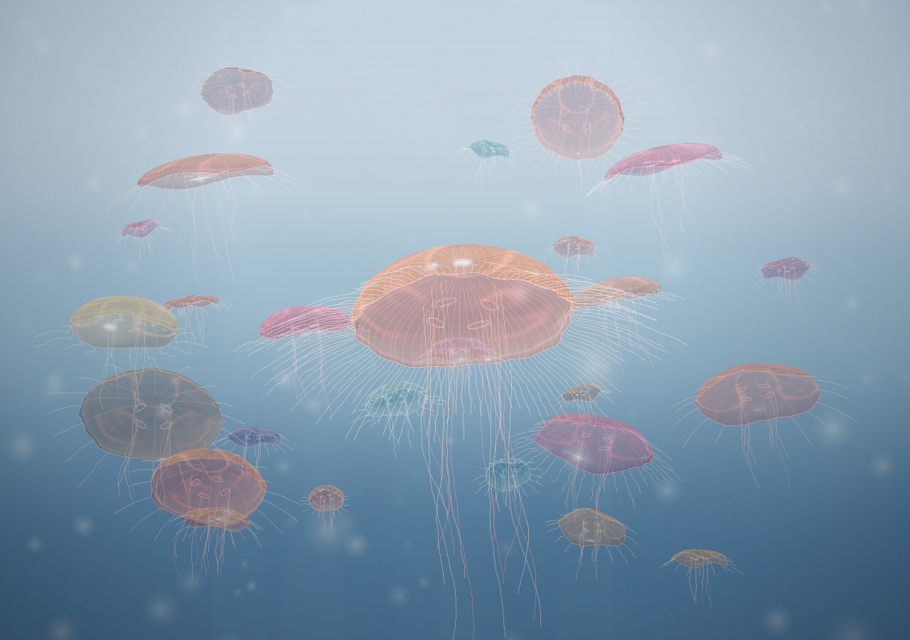
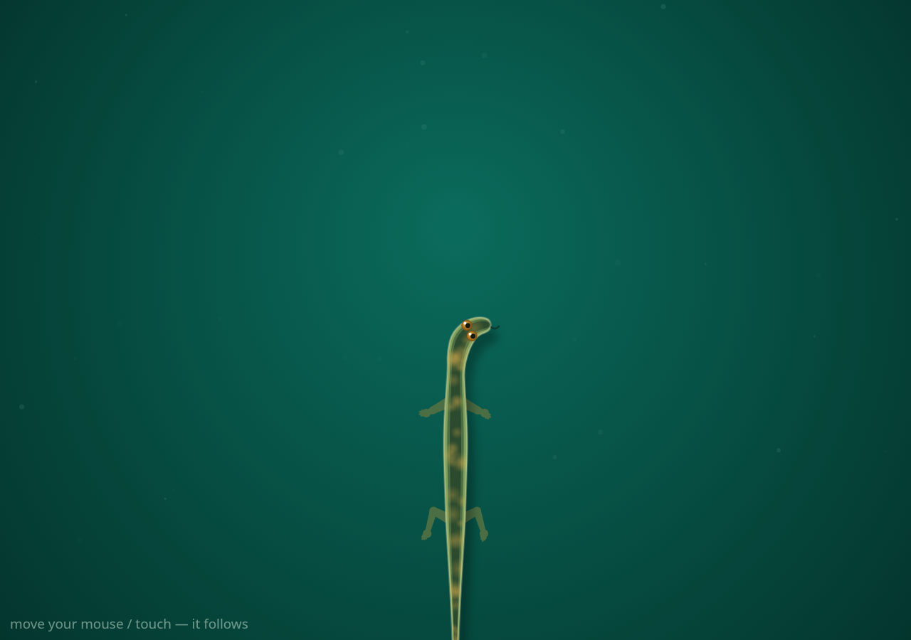
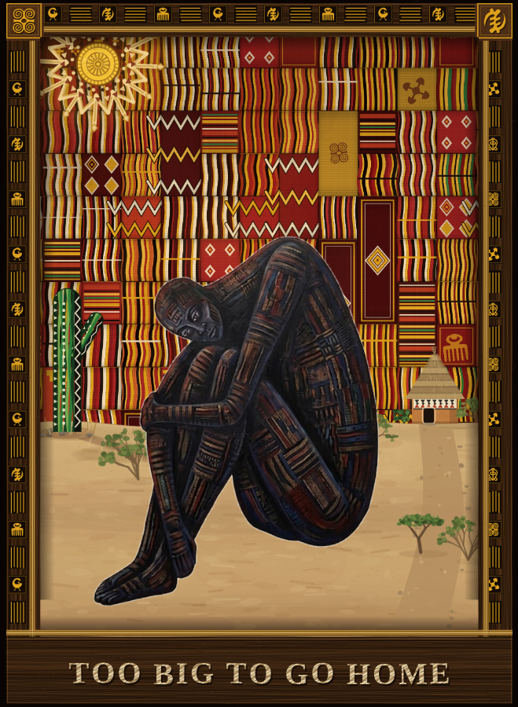

No. 01
Aurelia Study V7
Canvas · WebGL · pointer reactive
A bloom of moon jellies pulsing in deep water, each one procedurally grown. Tap anywhere and the water answers.
Enter the water Best with sound off and curiosity on.
No. 02
Salamander
Canvas · 2D · pointer reactive
A small amphibian that follows your hand across the screen, planting each footstep as it walks. No two crossings look alike.
Meet the salamander Move your mouse, or drag a finger.
No. 03
Too Big To Go Home
Canvas · p5.js · generative · in progress
A woven figure at rest: Asante kente cloth, a carved wood frame, desert sand, and a thatched hut, rebuilt layer by layer from a single image. Reload it. It never weaves the same way twice.
Visit the figure One reload in a thousand shows the original reference.